Unsere Chorgruppen
Die Seite Unsere Chorgruppen befindet sich im Menü unter Mitmachen.
Bevor du loslegst
Melde dich in den Wordpress-Administratoren-Bereich unter www.dev.musikwerk-stuttgart.de/wp-admin an und klick auf Seiten.
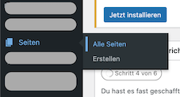
Text auf der Überblicksseite anpassen
- Navigiere zur Seite Unsere Chorgruppen und klick auf Bearbeiten. 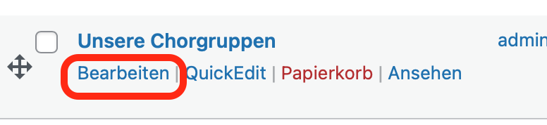 Die Texte auf der Überblicksseits sind in Textblöcke definiert.
- Einen Textblock auswählen und den Text wie gewünscht anpassen. 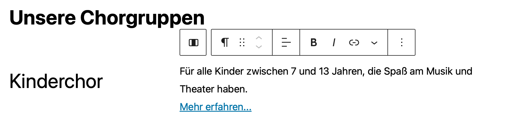
- Deine Änderungen anschließend veröffentlichen. 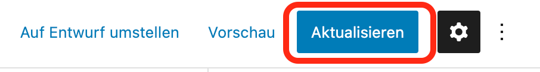
Text auf der Detailseite anpassen
- Das Verzeichnis Chöre auswählen. 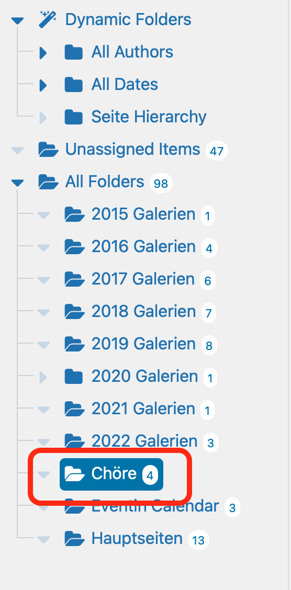
- Rechts die Seite für den Chor auswählen, die du bearbeiten willst und auf Bearbeiten klicken. Die Texte auf der Überblicksseits sind in Textblöcke definiert.
- Einen Textblock auswählen und den Text wie gewünscht anpassen. 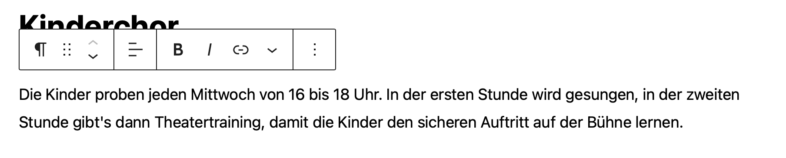
- Deine Änderungen anschließend über Aktualisieren veröffentlichen.
Bilder austauschen
Die Bilder und die Galerien werden mit einem Plugin namens Modula erstellt.
Allgemeine Informationen zum Modula-Plugin ist in der Dokumentation unter https://wp-modula.com/knowledge-base/ zu finden.
Bevor du loslegst
Melde dich in den Wordpress-Administratoren-Bereich unter www.dev.musikwerk-stuttgart.de/wp-admin an und klick auf Modula.
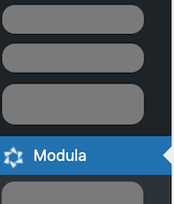
-
Die Galerie für den Chor finden und auf Bearbeiten klicken. 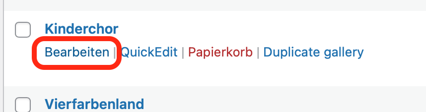
-
Die Bilder hochladen oder anpassen:
Wenn die Bilder auf deinem lokalen Rechner liegen:
- Klick auf Upload image files. 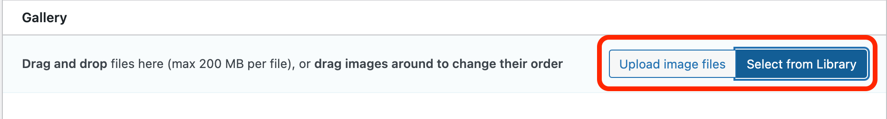
- Die Bilder von deinem Rechner auswählen.
Die Bilder erscheinen dann im Bereich Gallery.
Wenn die Bilder schon in der Bibliothek existieren:
-
Klick auf Select from library.
-
Die Bilder auswählen und auf Zur Galerie hinzufügen klicken. 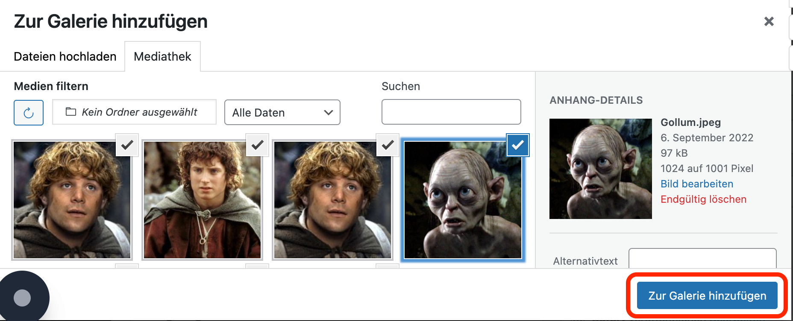
Die Bilder erscheinen dann im Bereich Gallery.
- Rechts auf Update Gallery klicken. 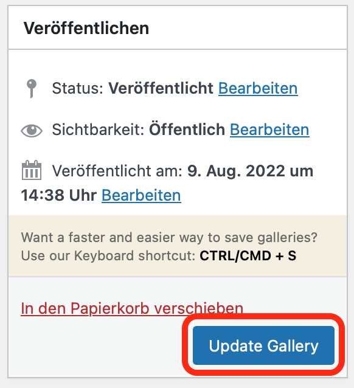